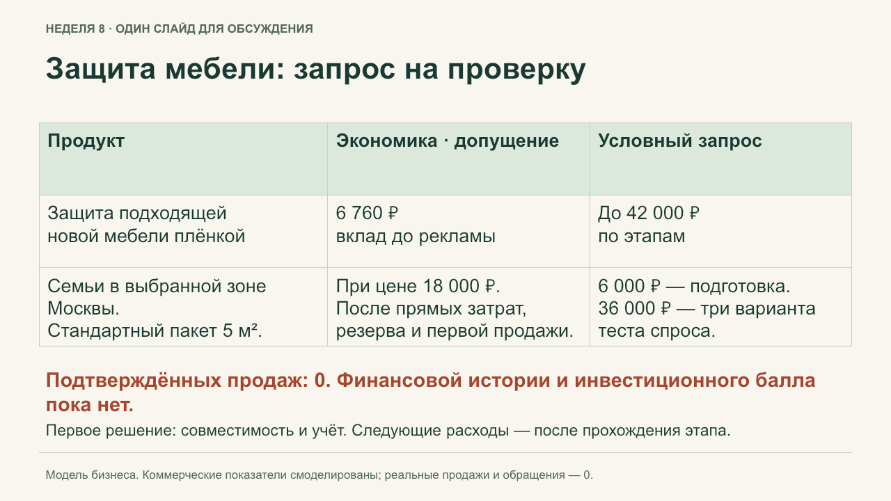

Выпускной питч
Коммерческие показатели смоделированы. Слайды можно открыть отдельно и использовать для проверки домашнего задания.

Коммерческие показатели смоделированы. Слайды можно открыть отдельно и использовать для проверки домашнего задания.
